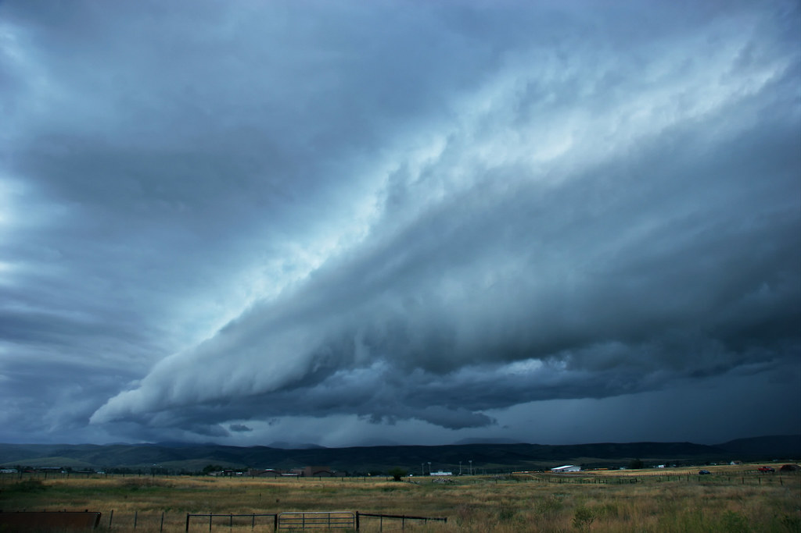

| Item | Parameter | Yes | No |
|---|---|---|---|
| 1 | MUCAPE>0 J/kg | ||
| 2 | LAPSE RATES 800-600 hPa (K/km)>6 | ||
| 4 | Specific umidity at 950 hPa > x | ||
| 5 | CIN < 100 J/kg |
Click here for severe weather evaluation
Click here for severe weather evaluation
Click here for severe weather evaluation

Click here for nowcasting monitoring

| Item | Parameter | Yes | No |
|---|---|---|---|
| 1 | SYNOPTIC SCALE: Frontal | Trough passage | ||
| 2 | SYNOPTIC SCALE: PV anomaly | ||
| 3 | SYNOPTIC SCALE: Jet streaks : Left Exit | Right Entrance | ||
| 4 | MESOSCALE: Thermal boundary: gradient on theta@950 + wind convergence line | 5 | LOCAL SCALE: Flow over orography |
| 6 | LOCAL SCALE: Breeze boundaries |
| Item | Parameter | Yes | No |
|---|---|---|---|
| 1 | Probability of convective precipitations >10% (TP3 > 40mm/3h)? | ||
| Item | Parameter | WEAK | MODERATE or STRONG in the lower levels | STRONG and DEEP | 1 | Deep layer shear |
|---|---|---|---|---|
| SHORT and MESSY | LONG and STRAIGHT | LONG and CURVED | 2 | Hodograph shape |